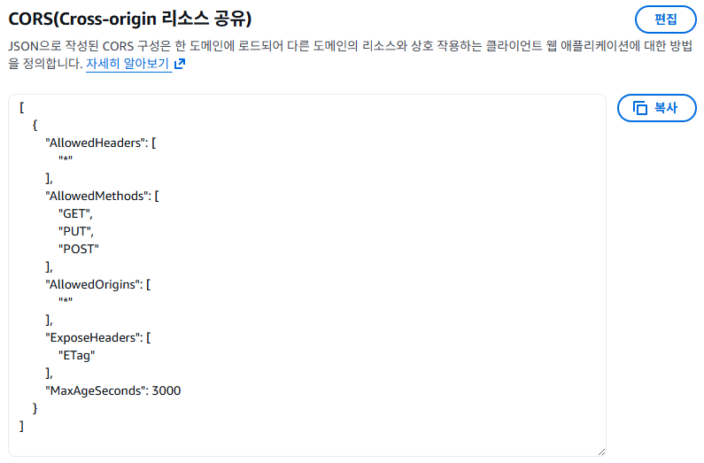

S3 & 리뷰 사진 업로드
학습 목표
- S3의 기본 개념(버킷, 객체, 키)을 이해한다
- Pre-signed URL의 동작 원리를 파악한다
- S3 버킷을 생성하고 CORS를 설정한다
- 리뷰 사진 업로드를 EC2 로컬에서 S3로 전환한다
S3란?
S3(Simple Storage Service)는 무한대 용량의 USB 드라이브입니다. 사진, 동영상, 문서, 백업 파일 등 어떤 파일이든 저장할 수 있고, 용량 제한이 없습니다. 그리고 이 USB는 인터넷에 연결되어 있어서 어디서든 접근할 수 있고, 파일을 잃어버릴 걱정이 없습니다 (99.999999999%의 내구성, 일명 "일레븐 나인").
S3의 특징
- 무한 스토리지: 용량 제한 없음 (개별 파일은 최대 5TB)
- 높은 내구성: 99.999999999% (파일이 손실될 확률이 거의 0)
- HTTP 접근: URL로 파일에 접근 가능
- 저렴한 비용: GB당 월 약 $0.025
- 다양한 용도: 파일 저장, 정적 웹사이트, 백업, 데이터 레이크
현재 문제: 리뷰 사진을 EC2에 저장하면?
EC2 종료 시 사진 소실 / 여러 EC2가 각각 다른 사진
버킷과 객체
버킷(Bucket)은 창고입니다. 세상에 하나뿐인 이름(고유)을 가지고, 그 안에 파일을 넣습니다.
객체(Object)는 창고 안의 상자(파일)입니다.
키(Key)는 상자에 붙은 라벨(파일 경로/이름)입니다.
예: review-photos/prod-001/photo1.jpg는 "review-photos/prod-001" 선반에 있는 "photo1.jpg" 상자입니다.
S3 주소 구조
# S3 URL 형식
https://[버킷이름].s3.[리전].amazonaws.com/[키]
# 예시
https://ecommerce-review-photos-hong.s3.ap-northeast-2.amazonaws.com/review-photos/prod-001/photo1.jpg
# 구성 요소
- 버킷: ecommerce-review-photos-hong
- 리전: ap-northeast-2
- 키: review-photos/prod-001/photo1.jpgS3 버킷 이름은 AWS 전체에서 유일해야 합니다. 다른 사람이 이미 사용 중인 이름은 사용할 수 없습니다. 보통 ecommerce-review-photos-[본인이름] 형식으로 만듭니다.
Pre-signed URL (미리 서명된 URL)
S3 버킷은 기본적으로 잠긴 창고입니다. 아무나 파일을 올리거나 볼 수 없죠. Pre-signed URL은 임시 출입증입니다. "이 URL을 가진 사람은 15분 동안 이 파일을 업로드할 수 있다"라는 시간 제한이 있는 출입증을 발급하는 것입니다. 시간이 지나면 출입증이 만료되어 더 이상 사용할 수 없습니다.
Pre-signed URL 업로드 흐름
왜 Pre-signed URL을 사용하나?
| 방식 | 흐름 | 문제점 |
|---|---|---|
| API 서버 경유 | 브라우저 → API → S3 | API 서버 부하, 느림 |
| S3 퍼블릭 | 브라우저 → S3 | 누구나 업로드 가능 (보안 위험) |
| Pre-signed URL | 브라우저 → S3 (임시 권한) | 빠르고 안전! |
버킷 정책과 CORS
버킷 정책 (Bucket Policy)
버킷 레벨에서 접근 권한을 정의하는 JSON 문서입니다. "누가 이 버킷에 어떤 작업을 할 수 있는가?"를 정의합니다.
버킷 정책은 건물 입구의 출입 규칙표입니다. "1층은 누구나 출입 가능, 2층은 직원만, 3층은 임원만" 같은 규칙이죠. S3에서는 "이 버킷의 파일은 모든 사람이 읽기 가능(퍼블릭)", 또는 "이 IAM 역할만 쓰기 가능" 등을 정의합니다.
CORS (Cross-Origin Resource Sharing)
브라우저에서 S3에 직접 파일을 업로드하려면 CORS 설정이 필요합니다. 브라우저의 보안 정책상, 다른 도메인(origin)으로의 요청은 기본적으로 차단되기 때문입니다.
CORS는 국제 전화 허가와 비슷합니다. 기본적으로 회사 전화(브라우저)는 사내 번호(같은 도메인)만 걸 수 있습니다. 해외(다른 도메인 = S3)로 전화하려면 관리자가 "이 번호는 국제 전화 가능"이라고 허가해줘야 합니다. CORS는 S3가 "이 도메인에서 오는 요청은 허가한다"라고 설정하는 것입니다.
스토리지 클래스
S3는 데이터 접근 빈도에 따라 다양한 스토리지 클래스를 제공합니다.
| 클래스 | 용도 | 비용 (GB/월) | 접근 비용 |
|---|---|---|---|
| S3 Standard | 자주 접근하는 데이터 | ~$0.025 | 낮음 |
| S3 Standard-IA | 가끔 접근 (Infrequent Access) | ~$0.0125 | 높음 |
| S3 Glacier | 아카이브 (장기 보관) | ~$0.004 | 복원 시간 필요 |
| S3 Glacier Deep Archive | 최장기 보관 | ~$0.00099 | 12시간 이상 |
Standard = 책상 위 (바로 꺼내 쓸 수 있음, 공간 비용 높음)
Standard-IA = 서랍 안 (가끔 꺼내 쓰지만 꺼내는 데 약간 시간 걸림)
Glacier = 창고 (거의 안 꺼내지만 보관 비용 저렴, 찾으려면 시간 걸림)
Deep Archive = 외부 창고 (법적 보관용, 초저렴, 꺼내려면 하루 이상)
리뷰 사진은 사용자가 자주 보는 데이터이므로 S3 Standard를 사용합니다.
실습
S3는 12개월 프리티어로 5GB 스토리지 + 20,000 GET + 2,000 PUT 요청이 무료입니다. 학습 수준에서는 비용이 거의 발생하지 않습니다.
-
S3 버킷 생성
AWS 콘솔 → S3 → Create bucket
General configuration
- Bucket name:
ecommerce-review-photos-[본인이름]
예:ecommerce-review-photos-hong - AWS Region:
ap-northeast-2(서울)
Object Ownership
- ACLs disabled (권장 - 기본값)
Block Public Access settings
- Block all public access: 체크 유지 (Pre-signed URL을 사용하므로 퍼블릭 필요 없음)
퍼블릭 접근 차단을 유지하세요!리뷰 사진 버킷은 퍼블릭으로 열지 않습니다. Pre-signed URL을 통해 권한이 있는 요청만 허용합니다. 나중에 CloudFront를 연결하면 CloudFront를 통해서만 사진에 접근하게 됩니다.
나머지 설정은 기본값
Create bucket 클릭
[스크린샷: S3 버킷 생성 화면] - Bucket name:
-
CORS 설정
브라우저에서 S3에 직접 업로드할 수 있도록 CORS를 설정합니다.
S3 → 버킷 클릭 → Permissions 탭 → Cross-origin resource sharing (CORS) → Edit
json[ { "AllowedHeaders": ["*"], "AllowedMethods": ["GET", "PUT", "POST"], "AllowedOrigins": ["*"], "ExposeHeaders": ["ETag"], "MaxAgeSeconds": 3000 } ]Save changes 클릭
AllowedOrigins 보안 참고학습에서는
"*"(모든 도메인 허용)을 사용하지만, 실무에서는["https://www.yourshop.com"]처럼 실제 프론트엔드 도메인만 허용해야 합니다. -
IAM 역할에 S3 권한 추가
Chapter 16에서 만든 EC2 IAM 역할에 S3 접근 권한을 추가합니다.
AWS 콘솔 → IAM → Roles → EC2-ShopEasy-Role
Add permissions → Attach policies
AmazonS3FullAccess검색 후 체크- Attach policies 클릭
실무에서는 최소 권한 원칙학습에서는
AmazonS3FullAccess를 사용하지만, 실무에서는 특정 버킷에 대한 최소한의 권한만 부여합니다: -
API 서버 .env 변경 (S3 설정)
API 서버의 파일 저장소를 로컬에서 S3로 전환합니다.
bash# API 서버 EC2에서 cd ~/ecommerce-app/api-server # .env 파일에 S3 설정 추가 cat >> .env <<'EOF' # S3 설정 STORAGE_TYPE=s3 S3_BUCKET=ecommerce-review-photos-hong S3_REGION=ap-northeast-2 EOF # .env 확인 cat .envbash# S3 SDK 설치 (이미 @aws-sdk/client-s3가 있을 수 있음) npm install @aws-sdk/client-s3 @aws-sdk/s3-request-presignerbash# API 서버 재시작 pm2 restart shopeasy-api -
브라우저에서 리뷰 사진 업로드 테스트
브라우저에서 ShopEasy에 접속하여 사진이 포함된 리뷰를 작성합니다.
texthttp://<프론트엔드-퍼블릭-IP>- 상품 상세 페이지로 이동
- 리뷰 작성 폼에서 별점, 내용 입력
- 사진 첨부 버튼으로 이미지 파일 선택
- 리뷰 등록 클릭
- 리뷰 목록에서 사진이 포함된 리뷰가 표시되는지 확인
-
S3 콘솔에서 업로드된 사진 확인
AWS 콘솔 → S3 → ecommerce-review-photos-hong
업로드된 사진 파일이 보이면 성공입니다!
- 버킷 안에
review-photos/같은 폴더가 생겼는지 확인 - 사진 파일을 클릭하면 메타데이터(크기, 타입 등)를 확인할 수 있습니다
- Object URL을 복사하여 브라우저에 붙여넣으면 접근 거부됩니다 (퍼블릭 차단이 정상)
파일은 Pre-signed URL로만 접근 가능S3 Object URL로 직접 접근하면 "AccessDenied"가 나옵니다. 이는 정상입니다. 리뷰 사진은 API 서버가 생성한 Pre-signed URL(시간제한 있는 임시 URL)을 통해서만 접근할 수 있습니다.
- 버킷 안에
-
Pre-signed URL 동작 확인
API 서버가 생성하는 Pre-signed URL을 직접 확인합니다.
bash# 리뷰 목록 조회 - 사진 URL이 Pre-signed URL인지 확인 curl http://localhost:5000/api/products/1/reviews | python3 -m json.tool # 응답에서 photos 배열의 URL을 확인 # Pre-signed URL은 다음과 같은 형태: # https://ecommerce-review-photos-hong.s3.ap-northeast-2.amazonaws.com/ # review-photos/xxx.jpg?X-Amz-Algorithm=...&X-Amz-Signature=...Pre-signed URL의 구조Pre-signed URL에는
X-Amz-Signature(서명),X-Amz-Expires(만료 시간) 등의 파라미터가 포함됩니다. 이 서명이 유효한 동안만 접근이 가능하며, 만료 후에는 접근이 거부됩니다. -
AWS CLI로 S3 확인bash
# 버킷 내 파일 목록 확인 aws s3 ls s3://ecommerce-review-photos-hong/ --recursive # 특정 파일 상세 정보 aws s3api head-object \ --bucket ecommerce-review-photos-hong \ --key review-photos/example.jpg # 버킷 용량 확인 aws s3 ls s3://ecommerce-review-photos-hong/ --recursive --summarize
- S3 버킷을 생성하고 CORS를 설정
- EC2 IAM 역할에 S3 접근 권한 추가
- 리뷰 사진 저장소를 EC2 로컬에서 S3로 전환
- Pre-signed URL을 통한 안전한 파일 업로드/다운로드 확인
- S3 콘솔과 CLI로 업로드된 파일 확인
(Pre-signed URL)